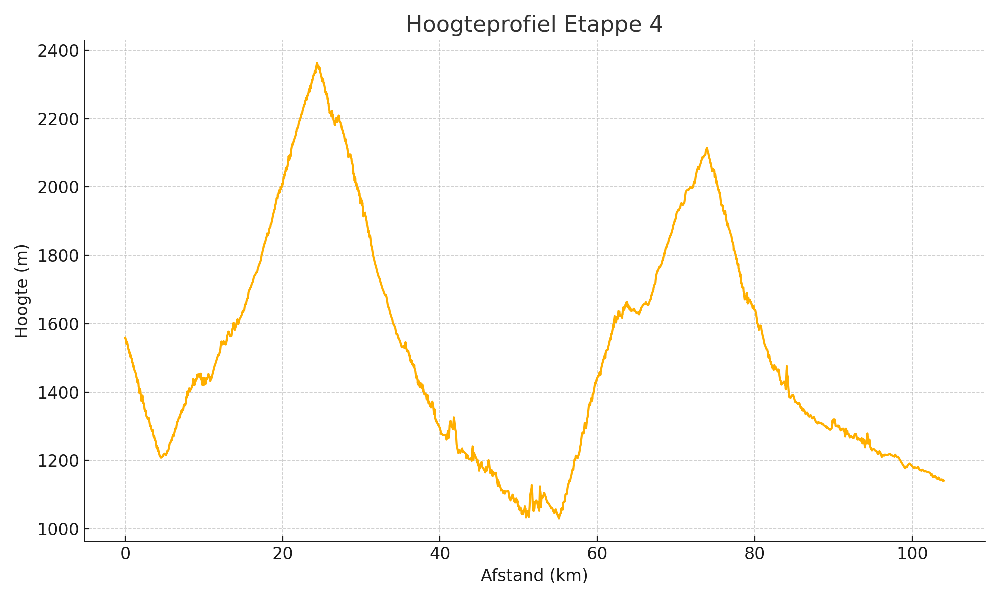

Top van de Col: Col d'Izoard

Details
Chauffeur: Rikkert
Adres hotel: Le Grand Hôtel - Pl. Président Paul Reynaud, 04400 Barcelonnette, Frankrijk
Voorbeschouwing - kort
Etappe 4 voert van Briançon naar Jausiers over de steile Col d’Izoard (14 km à 7,3 %) en de 19 km naar de Col de Vars (6,6 %), met twee technische afdalingen en een verraderlijk muurtje vlak voor de finish – een dag van steen, wind en zenuwen.
Basisgegevens
| Afstand (km) | Klim (m) |
|---|---|
| 104 | 2766 |
Hoogteprofiel
Voorbeschouwing Etappe 4
Vanaf de middeleeuwse vestingmuren van Briançon trekken de renners vandaag de steile flanken van de Alpen in. In de straten van de historische stad gonst het nog van de laatste aanwijzingen: krappe bochten, gedurfde afdalingen, en een lange dag voor de boeg. De rit naar Jausiers belooft een evenwichtsoefening tussen pure klimmersmacht en technische stuurmanskunst.
Vlak na de start lonkt de Col d’Izoard: 14 km aan gemiddeld 7,3 %, met uitschieters richting 10 % op de beruchte “Casse Déserte”-plateau. Hier wordt de benenbuching getest; elke haarspeldbocht, uitgesleten in miljoenen jaren oude steen, vraagt om perfecte lijnkeuze. Renners met souplesse en kordaat schakelen kunnen hier al vroeg gaten slaan.
Boven op de Izoard heerst een martiale stilte: kale rotsformaties, koude windvlagen, en uitzicht tot in de Ecrins. Wie te veel vaart zoekt in de lange afdaling, riskeert een schuiver op de scherpe bochten. De afdaling naar Château-Ville-Vieille vereist koelbloedigheid: de weg kabbelt tussen rotspartijen en tunnels, en een moment van onoplettendheid kan de dag verwoesten.
Na een korte, vlakke passage door de vallei, begint de klim naar de Col de Vars: een 19 km lange maar glooiendere uitdaging, gemiddeld 6,6 %, met langgerekte slingers en enkele venijnige stukken van 8 %. In het bosrijke middenstuk is het zaak om de hartslag onder controle te houden, terwijl buitenbochten roepen om brute kracht.
Boven op Vars, op 2 108 m, staan de renners bloot aan wisselende weersomstandigheden: zonnige stroken kunnen overgaan in wolkenpartijen waar mist de lijnen vervaagt. De tweede afdaling, richting Guillestre, combineert brede bochten met scherpe hoekjes – een tweede proeftuin voor de durfallen in de groep.
In de slotfase valt de beslissing in de smalle doorgang naar Jausiers. Een laatste venijnig muurtje – enkele honderden meters lang, maar steil genoeg om vermoeide benen onverbiddelijk aan te pakken – luidt de finale in. De finish in het centrum, omlijnd door alpiene pieken, biedt ruimte voor een verrassing: een puncher die na 104 km en 2 766 m klimmen zijn armen kan heffen.
Etappe 4 is een alpenklassieker in een notendop: meedogenloze cols, technische afdalingen en een listige finale. Wie hier de juiste mix vindt tussen durf, tactiek en pure kracht, kan zich kronen tot koning van de Izoard en Vars.